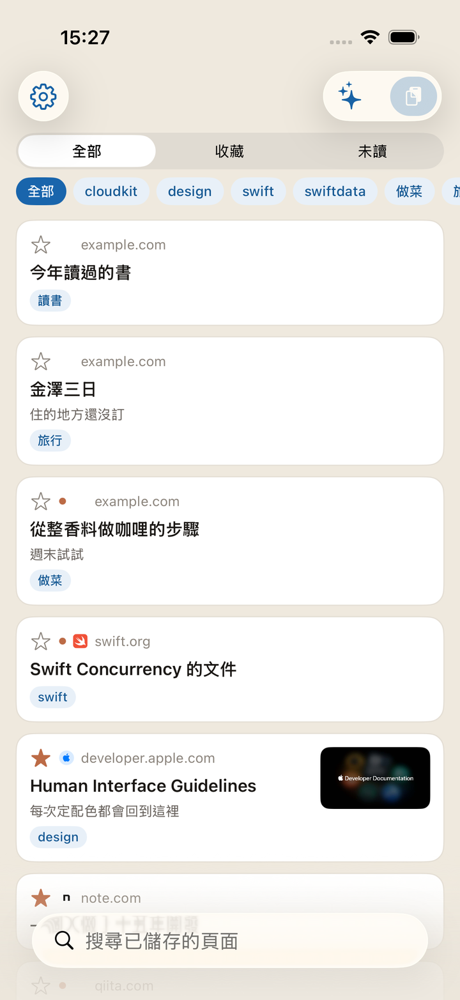
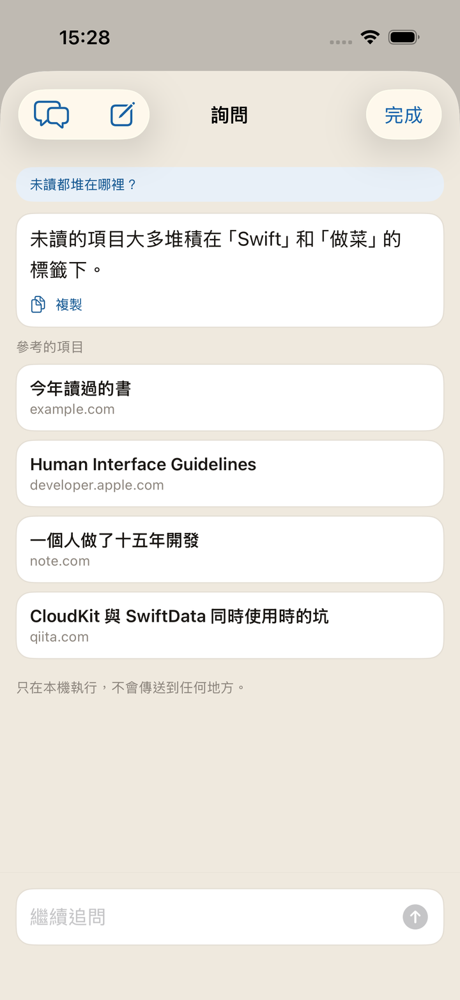
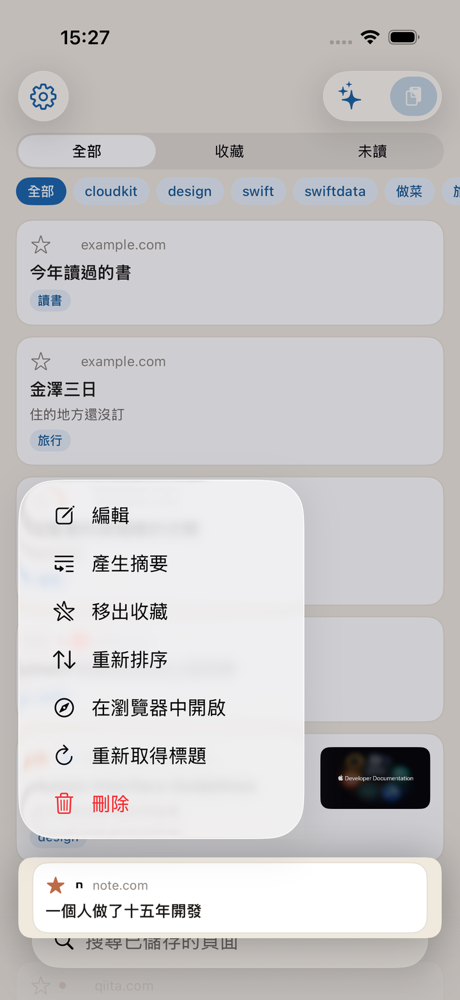
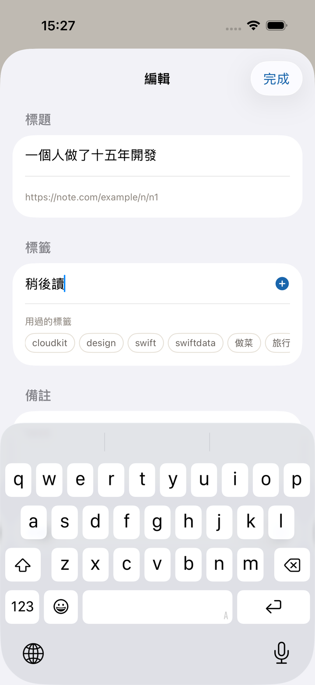
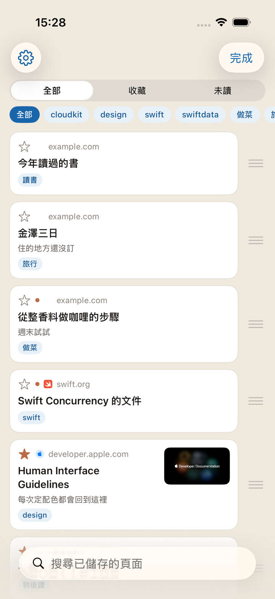
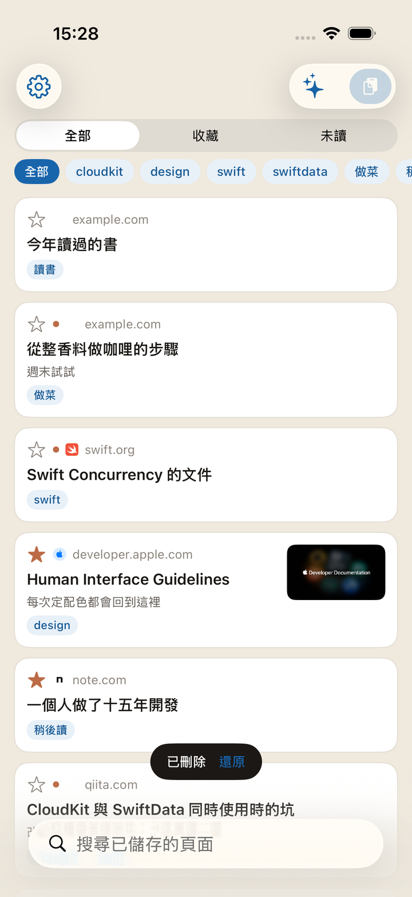
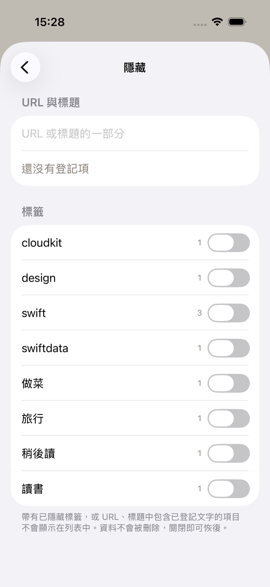
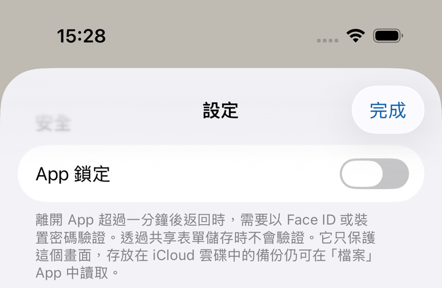

入口有兩個。兩種方式都是按下的瞬間儲存就完成了。
在 Safari 等 App 中開啟網頁，點分享按鈕 → 選擇 Kakesu。 如果列表裡沒有，請在分享表單的「更多」裡把 Kakesu 打開。
選取的那一刻儲存就已經完成。接著出現的畫面可以 當場加上標籤和備註，不加直接關掉也沒關係，之後在編輯畫面補上即可。 按錯的時候，用左上角的「還原」只刪掉剛剛建立的那一筆。
在已複製網址的狀態下開啟 App，點右上角的貼上按鈕。
標題和縮圖會在之後補上。 剛儲存時列表裡只有網址，App 開啟期間會依序去取。 即使在收訊不好的地方儲存，儲存本身也不會失敗。
同一個頁面儲存兩次也不會變成兩筆
（?utm_source= 這類追蹤參數和 www. 的差異會被忽略，視為同一個頁面）。
未讀是圓點，收藏是星號。
不只是標題，網頁內文也在搜尋範圍內。 儲存之後，會連同標題一起收錄內文的開頭。 就算不記得標題，也能靠內文裡出現過的詞把它挖出來。
透過列表右上角的閃光標記按鈕，可以用自己的話提問。 像「怎麼用？」「最近都儲存了什麼？」「未讀堆在哪裡了？」這樣問， 答案下方會列出參考的項目，可以直接開啟。
只在裝置內運作。問題和答案都不會傳到外部。 交給模型的，只是與問題相近的少數幾筆的標題、標籤、備註、網站名稱， 以及數量和常用標籤之類的統計。不會交出完整的網址。
可以接著問。像「那是什麼時候儲存的？」這樣， 能承接前面的對話來提問。想換話題時，請按左上角的 「新對話」，此前的對話會清空。 對話不會留在任何地方，關掉畫面也就沒了。
答案下方的「複製」可以原樣抄下來。 問起這個網站的位置時，會以可點擊的連結回答。 能變成可點擊連結的只有這個網站。 絕不會把你儲存的頁面網址寫進答案裡。
只有在支援 Apple Intelligence 的裝置（iOS 26 以上） 並已在 iOS 設定中啟用時，按鈕才會出現。 不支援的裝置上根本不會出現這個按鈕。
在列表中長按文章 → 選擇「摘要」，畫面一開啟摘要就在那裡。 這不是用來閱讀的畫面。它是用來決定現在讀不讀的。
可以就這樣繼續就這篇文章提問。 答案的依據只有這一頁的內文，不摻入其他收藏。 沒能取到內文的頁面無法產生摘要（那時會如實告知）。
每篇文章的對話只保留最新 5 筆在裝置上。 這是為了日後再開啟同一篇文章時能接著問。 不會傳送到 iCloud。換裝置時不會帶過去。
保留下來的對話可在「詢問」畫面的左上角（對話框標記）查看。 可以一筆筆刪除，也可以用右上角的「全部刪除」一併清除。 在摘要畫面，左上角的垃圾桶只刪除這篇文章的對話。
與「詢問」一樣，只有支援 Apple Intelligence 的裝置（iOS 26 以上） 才會在選單中出現。


在 App 內開啟。讀完關掉後，回到列表的同一位置。開啟的那一刻即視為已讀。
去掉廣告和多餘的東西，只顯示內文。預設是開啟的。 想看頁面原樣時，請關閉設定 → 顯示 →「以閱讀器開啟」。 不支援閱讀器的頁面，即使不關也會照原樣開啟。
文字大小和背景顏色可以在開啟的畫面裡調整。
需要登入的頁面，或想用擴充功能的頁面，從這裡交給 Safari。

長按 → 編輯，可以修改標題、標籤、備註和未讀狀態。
排序是長按 → 排序 → 用手指拖曳。 正在篩選或搜尋時無法排序（只移動看得見的一部分，會破壞整體的順序）。
沒能取到標題的項目，用長按 → 重新取得再去取一次。
設定 → 隱藏裡會列出正在使用的標籤和各自的數量。 把標籤那一列向左輕掃，會出現重新命名和刪除。 兩者都對全部項目一併生效。
刪除標籤不會刪除書籤。只是把該標籤拿掉而已。 標籤變多時，可用同一畫面的搜尋來縮小範圍。


向左輕掃，或長按 → 刪除。 刪除之後，「還原」會出現幾秒。 按下就能復原。不去按它，那時才真的刪掉。
設定 → 隱藏。登錄網址或標題中包含的字串後， 命中的內容就會從列表中消失。也可以依標籤隱藏。 兩種方式都保留規則，隨時開關。
已隱藏的數量顯示在列表下方。點一下會開啟設定，從那裡進入「隱藏」。


每週一次，把儲存的全部內容寫成 JSON，放進 iCloud 雲碟的 Kakesu 檔案夾。 可以從「檔案」App 開啟，刪掉 App 之後也還在。
備份保留最近 8 次，舊的會依序刪去。
設定 → 資料裡隨時可以匯出（送到哪裡由你決定）和 匯入。匯入時會跳過已有的網址，只補上沒有的，不會覆蓋。 同一畫面還會顯示最近一次自動備份的日期。
儲存的網址，就是瀏覽紀錄本身。 如果裝置有可能交到別人手上，請打開設定 → App 鎖定。 開啟 App 時會用 Face ID / Touch ID 或裝置密碼確認。
保護的只是 App 的畫面。 放在 iCloud Drive 裡的 JSON 備份，可以直接在「檔案」App 中讀取。 若想連備份也一併隱藏，請在「檔案」App 一側管理。
裝置未設定密碼時無法使用此功能（設定項目會變成無法點擊）。
從分享表單儲存不會被鎖定攔住。 在儲存前插入確認，會漏掉那些你以為已經丟進去的東西。

從設定的「關於本 App」，可以開啟 使用條款和隱私權政策。 同一處還會顯示 App 版本，聯絡時請一併告知。
把小工具放到主畫面，就會顯示未讀數量。 小尺寸列出 1 筆、中尺寸最多 3 筆最近的標題。 點一下會開啟 App。
開啟 App 鎖定期間，只顯示數量。 標題和網站名稱都不會出現在小工具上。 因為主畫面是沒有鎖、會被人看到的地方。
裝置處於鎖定狀態時，搜尋不會回答。 沒有理由把儲存的內容交給一台尚未解鎖的裝置。 儲存則在鎖定時依然可用。能隨手丟進來才是它的意義，所以這一側沒有擋。
在捷徑 App 的「App」裡選擇 Kakesu 就能找到。也可以放進自動化裡。
只要登入的是同一個 Apple 帳號，內容就會直接出現。 沒有建立帳號這一步。想停止同步時，請到 iOS 的「設定」→ Apple 帳號 → iCloud，把 Kakesu 關掉。
這裡沒寫到的，歡迎透過聯絡頁面告訴我們。